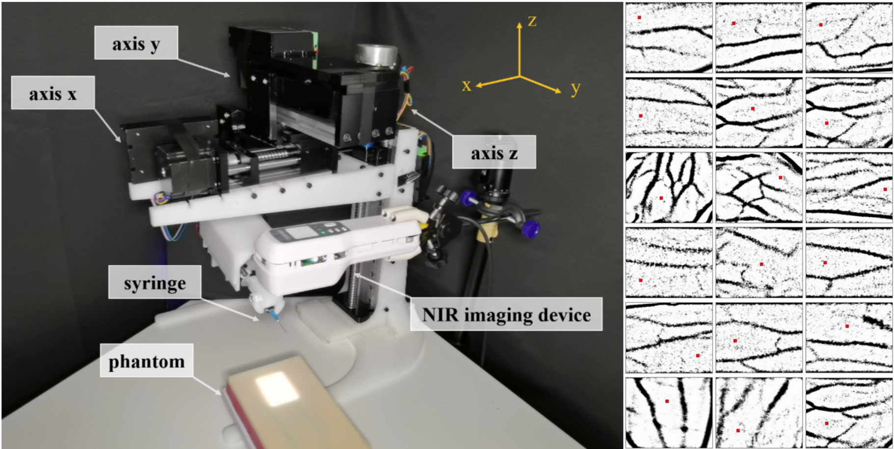

|
Yu Chen I am a Master of Science in Robotics (MSR) student in the Robotics Institute, Carnegie Mellon University. I am fortunate to be advised by Prof. Howie Choset. I am also honored to work with the legendary robotic engineer Ben Brown and my thesis comittee member Prof. Guanya Shi. Before joining CMU, I received my B.Eng. degree in Vehicle Enigineering (Railway) from Tongji University in 2022. Email: yuchen3 [at] andrew [dot] cmu [dot] edu / uchen0223 [at] gmail [dot] com |
ResearchMy research aims to bring the precision of computer science and applied mathematics to the complexities and uncertainties inherent in real-world robotic systems. Specifically, I am interested in improving the robots' performance in complex robot-environment interactions, therefore enabling the robots to better deal with intricate tasks in practical scenarios. |
|
Propagative Distance Optimization for Efficient and Effective High-Dimensional Kinematics and Motion Planning
Yu Chen, Yilin Cai, Jinyun Xu, Zhongqiang Ren, Guanya Shi, Howie Choset *Part of our work: [arXiv] Efficiently and effectively solving kinematics and motion planning problems for a broad range of articulated robots with complex task constraints using propagative distance optimization. |
|
|
Graph-Propagation-based Kinematic Algorithm
for In-pipe Truss Robots
Yu Chen, Jinyun Xu, Yilin Cai, Shuo Yang, Ben Brown, Fujun Ruan, Yizhu Gu, Howie Choset, Lu Li RA-L 2024 Invited to IROS 2024 (Oral Presentation) Developing an in-pipe truss robot with redundant joints and linkages for pipe shape adaptation and actuation force distribution, providing significant advantages for complex pipeline navigation and heavy payload delivery. |
|
|
Semi-supervised Vein Segmentation of Ultrasound Images
for Autonomous Venipuncture
Yu Chen, Yuxuan Wang, Bolin Lai, Zijie Chen, Xu Cao, Nanyang Ye, Zhongyuan Ren, Junbo Zhao, Xiao-Yun Zhou, Peng Qi IROS 2021 (Oral Presentation) A robot that performs venipunctures by determining the depth of a human vein from ultrasound images using a semi-supervised learning method. |
|
|
Venibot: Towards Autonomous Venipuncture with Automatic Puncture
Area and Angle Regression from NIR Images
Xu Cao, Zijie Chen, Bolin Lai, Yuxuan Wang, Yu Chen, Zhengqing Cao, Zhilin Yang, Nanyang Ye, Junbo Zhao, Xiao-Yun Zhou, Peng Qi IROS workshop, 2021 A venipuncture robot that performs punctures by determining the planar location of a human vein from near-infrared images. |
|
|  |
Autonomous Robotic Subcutaneous Injection under
Near-Infrared Image Guidance
Dingliang Huang, Bin Hu, Yinna Chen, Yu Chen, Liangchen Sui, Zhaoyang Wang, Yijun Jiang, Zhongyuan Ren, Yuxuan Wang, Xu Cao, Peng Qi ASME IDETC-CIE, 2021 A venipuncture robot performing autonomous cannulation of subcutaneous injections. |

|
Deep Learning-based Rapid Generation of Broadly
Reactive Antibodies Against SARS-CoV-2 and its Omicron Variant
Hantao Lou, Jian-Qing Zheng, Xiaohang Fang, Zhu Liang, Meihan Zhang, Yu Chen, Chunmei Wang, Xuetao Cao Cell Research, 2023 An Atrous Convolution Neural Network based deep learning framework for broadly reactive antibodies against SARS-CoV-2 and VOCs prediction. |
|
Feel free to steal this website's source code. Do not scrape the HTML from this page itself, as it includes analytics tags that you do not want on your own website — use the github code instead. Also, consider using Leonid Keselman's Jekyll fork of this page. |